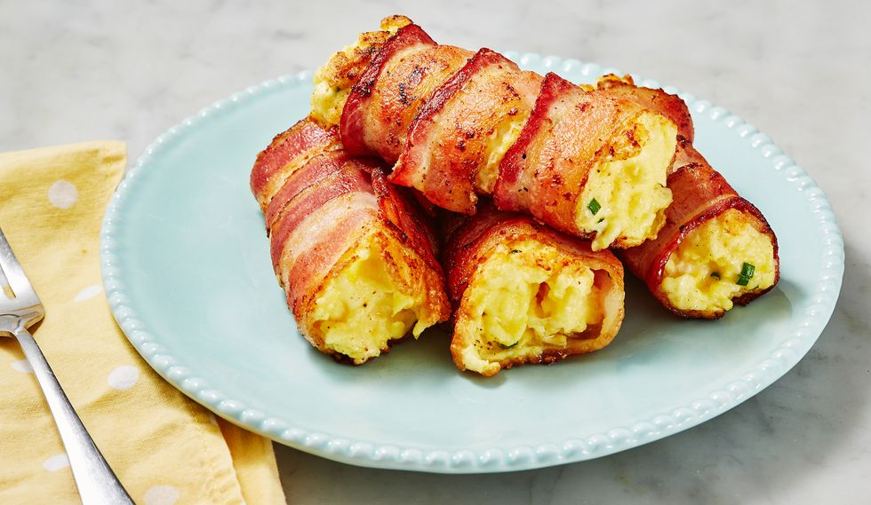
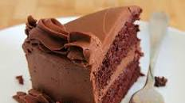

Bakery
-
Bacon, Egg, and Cheese Roll-Ups

Ingredients- 6 large eggs
- 2 tbsp. milk
- 1/4 tsp. garlic powder
- Kosher salt
- Freshly ground black pepper
- 1 tbsp.butter
- 1 tbsp. finely chopped chives
- 12 slices bacon
- 2 c. shredded cheddar
Directions
Step 1 In a large bowl, whisk together eggs, milk, and garlic powder and season with salt and pepper.
Step 2 In a nonstick skillet over medium heat, melt butter. Add eggs and scramble, 3 minutes, then stir in chives.
Step 3 On a cutting board, lay out three strips of bacon. Sprinkle the bottom third with cheddar and top with a large spoonful of scrambled eggs. Roll up tightly. Repeat with remaining cheese and eggs.
Step 4 Return skillet to heat and add bacon roll-ups seam side down. Cook until crispy on all sides, then transfer to a paper towel-lined plate until ready to serve. -
One Bowl Chocolate Cake

Stir or whisk together sugar, flour, cocoa, baking powder, baking soda, and salt until evenly combined.
Add Wet Ingredients
Add the eggs, milk, oil, and vanilla. Mix on medium speed for about two minutes. Stir in boiling water. Don't worry if the batter seems a little thin, as reviewers say that's perfectly normal. Bake
Pour the cake batter into prepared pans. Bake for about half an hour, until a toothpick comes out clean when inserted in the middle. Let cool and top with your favorite frosting.